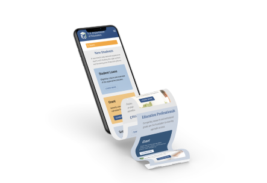

Redesign of the website with the
focus on the information architect
improvement.

Understanding users and what they are trying to achieve and creating intuitive and pain-free to use processes is what I enjoy in my design jurney. My background
of Graphic Design helped me to improve the overall user experience of product—by creating a positive first impression and good aesthetics.